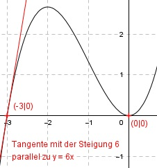

Aufgabe 56 Der Graph einer ganzrationalen Funktion 3. Grades berührt die x-Achse im Koordinatenursprung und hat eine Tangente am Punkt (-3|0), die parallel zur Geraden y = 6x verläuft. Wie lautet seine Funktionsgleichung?  Allgemeine Form einer ganzrationalen Funktion 3. Grades: f(x) = ax3 + bx2 + cx + d f’(x) = 3ax2 + 2bx + c f’’(x) = 6ax + 2b 4 Bedingungen: 1. Berührt die x-Achse im Koordinatenursprung bedeutet zum einen: f(0) = 0 --> a * 03 + b * 02 + c * 0 + d = 0 --> d = 0 2. Berührt die x-Achse im Koordinatenursprung bedeutet zum anderen: f’(0) = 0 --> 3a * 02 + 2b * 0 + c = 0 --> c = 0 3. Hat eine Tangente am Punkt (-3|0) bedeutet: (d = 0 und c = 0 eingesetzt) f(-3) = 0 --> a * (-3)3 + b * (-3)2 = 0 --> -27a + 9b = 0 I 4. Hat eine Tangente am Punkt (-3|0) parallel zu y = 6x bedeutet: (c = 0 eingesetzt) f’(-3) = 6 --> 3a * (-3)² + 2b * (-3) = 6 --> 27a - 6b = 6 II I + II -27a + 9b = 0 27a - 6b = 6 -------------- 3b = 6 |:3 b = 2 b = 2 in II eingesetzt: 27a - 6 * 2 = 6 27a - 12 = 6 |+12 27a = 18 |:27 a = 2/3 Gesuchte Funktionsgleichung: f(x) = (2/3)x3 + 2x2 - x + 1